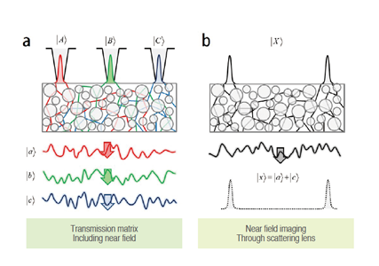
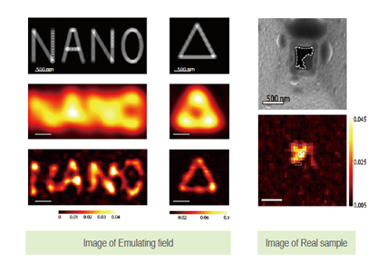
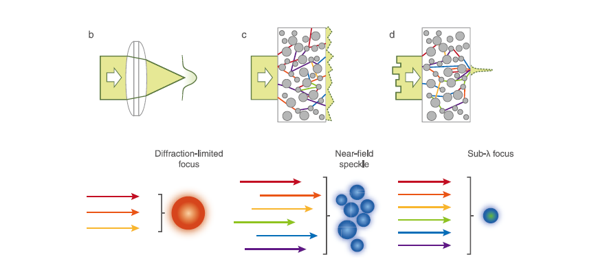

KAIST Top 10
KAIST Top 10
KAIST RESEARCH ACHIEVEMENTS
Super scattering lens
to form an ultra-high
resolution optical focus
Department of Physics YongKeun ParkㆍYong-Hoon Cho
Summary
Our novel method, 'scattering superlens' enabled us to control near-field components of light including visible range. By using our near-field control technique, we have proposed to demonstrate super-resolution photolithography using scattering superlens where the our method is free from Abbe's diffraction limit as it works in the near-field regime. The proposed near-field control unit needs small space and is economic compared to current systems as it composed of simple optical components. Moreover, we propose to develop a new wavefront shaping and recording technique using holographic photopolymer which can substitute current NSOM systems.
R&D Report
Conventional optical lenses are widely used in industry and the field of researches. However, the resolution of optical imaging systems composed of the conventional lenses are limited by approximately a half wavelength due to the diffraction effect, which is a fundamental physical phenomenon. Previously, our research team has proposed a novel optical method exploiting multiple scattering in highly disordered media to generate focus beyond the diffraction limit, which is said to be 'scattering superlens'. The proposed approach can be utilized for super-resolution bio-imaging, photo-lithography and optical tweezer.
Our team have demonstrated sub-wavelength light focusing (JH. Park et al., Nature Photonics(2013) and full-field sub-wavelength imaging(C. Park et al., Physical Review Letters(2014). The measurement of optical transmission matrix in near field regime enables us to achieve super-resolution image by using time-reversal symmetry of propagating light in disordered media. We achieved the image with sub-wavelength resolution which is better than 200nm, where the light source having a wavelength of 532nm was used. We expect that the proposed method can be directly used for demonstrating super-resolution photolithography.
 Fig 1. Imaging concept of scattering lens with time reversal method
 Fig 2. Full-Field Subwavelength Imaging Using a Scattering Superlens
Control near field components of light including visible range. By using our near-field control technique, we have proposed to demonstrate super-resolution photolithography using scattering superlens where the our method is free from Abbe's diffraction limit as it works in the near field regime. The proposed near-field control unit needs small space and is economic compared to current systems as it composed of simple optical components. Moreover, we propose to develop a new wavefront shaping and recording technique using holographic photopolymer which can substitute current NSOM systems.

Fig 3. The principle of a scattering super lens: sub-wavelength
optical focus can be generated via controlling scattered nearfields
Research results
ㆍ Over 10 media coverages on [Paper 1] and [Paper 2] respectively
ㆍSelected as front cover picture in "Asia Research News"
ㆍHighlighted and introduced in "SPIE newsroom"
ㆍMETHOD AND APPARATUS FOR MANIPULATING NEAR-FIELD USING SCATTERING CONTROL, Japan & US Patent application filed.
ㆍSelected for the Top 10 Science & Technology News in 2013 by Korean Federation of Science and Technology Societies(KOFST)
Reference material
ㆍ [Paper] J. Park, C. Park, H. Yu, J. Park, S. Han, J. Shin, S. Ko, K. Nam, Y. Cho*, and Y. Park*, "Subwavelength light focusing using random nanoparticles", Nature Photonics 7, 454(2013) [2013 Impact Factor = 29.958]
ㆍ[Paper 2] C. Park, J. Park, C. Rodriguez, H. Yu, J. Park, S. Han, J. Shin, S. Ko, K. Nam, Y. Cho*, and Y. Park*, "Full-field dynamic sub-wavelength imaging using a scattering super-lens", Physical Review Letters, 113, 113901(2014) [2013 Impact Factor = 7.728]